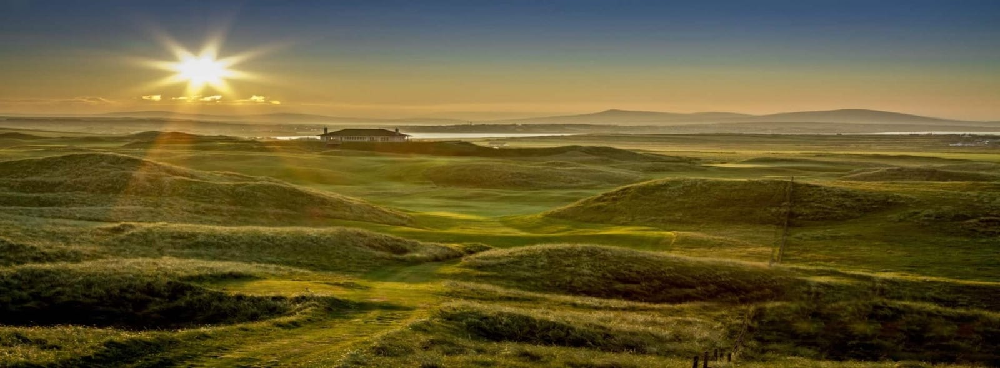

Emerse yourself in the breath-taking landscape of the Wild Atlantic Way while enjoying the world's best Links Classic and Parkland Golf Courses.
Course InformationEmerse yourself in the breath-taking landscape of the Wild Atlantic Way while enjoying the world's best Links Classic and Parkland Golf Courses.
Course InformationThe Wild Atlantic Way is one of the world’s longest coastal touring route. The coastal stretch of 2,500km is home to some of the greatest golf courses known worldwide. Dine and enjoy the music in old, traditional Irish pubs & restaurants along the way while testing your golfing skills on World Top golf courses like Lahinch, Trump Doonbeg, Ballybunion etc. In total, there are over 30 Links Golf courses so you are bound to find your own hidden treasure gem.
Our mission at Wild Atlantic Golf is to bring like-minded golf enthuatists together through showcasing the very best golf courses accross the West Coast of Ireland. We will be playing every links and parkland course wrapped around the Wild Atlantic and share our experiences with you.
The West of Ireland stands out with its world-class Links and Parkland golf courses worldwide.
The Dubai Duty Free Irish Open was held here in 2019. Are you ready to tackle the same course as
top golfers like Rory McIlroy?
Click on the button below for course information and prepare for a challenge!
Sign up to our newsletter to be
the first to hear about course
information and monthly updates
or
follow us through social media for a
"Hole in One" experience!
Four new courses every month!